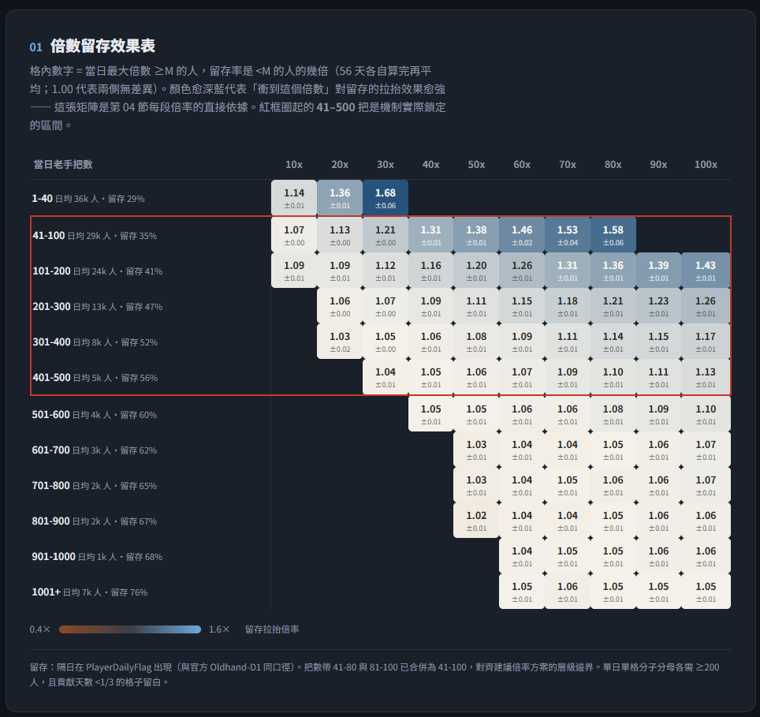

§1時機
先決定什麼時候換表。分成兩種：玩家覺得枯燥時，換表是為了改善體驗；玩家正順的時候有操作空間，換表是為了控制波動或換個新鮮感，玩家不會有負面感受。
1.1玩家覺得枯燥
| 時機 | 玩家感受 | 玩家可能會想拿到什麼 |
|---|---|---|
| 連續不得分 | 一直沒中 | 趕快中獎，看到中獎演出 |
| 連續不進 FG | 等不到 FG，沒有期待感 | 進一次 FG |
| 連續 FG 太爛（10× 以下） | 進了 FG 也沒拿到東西 | 一次有收穫的 FG |
| RTP 下滑速度太快 | 輸得很快 | 把輸掉的拉回一些 |
| 玩得很平、沒有起伏 | 節奏平淡、沒有高潮 | 一次大倍數、有高潮 |
1.2有操作空間
| 時機 | 玩家感受 | 可以怎麼操作 |
|---|---|---|
| 玩家體驗不錯 | 玩得順 | 換成 FG 加強的表，讓好體驗延續 |
| 進 FG 特別多次 | FG 一直來 | 暫停 FG，改看 BG 有特色的倍數 |
| RTP 超過 100% | 正在贏錢 | 換成波動低的表，避免再開出大獎，讓玩家穩穩玩下去 |
§2作法
2.1換上的數學（倍率權重）
分成 BG 數學與 FG 數學兩組，可以各自換。
| BG 數學 | 怎麼調 |
|---|---|
| 表 A：FG 加強 | BG RTP 減少、FG RTP 增加：強化 FG 週期（比較快進 FG）與 FG 內容 |
| 表 B：沒有 FG | FG RTP 0%，RTP 全部放在 BG；BG 強化較有特色的倍數區間 |
| 表 C：BG 連續中獎 | BG Hit Rate 50% |
| 表 D：中高倍數加強 | BG Hit Rate 下降，提高中高倍數的中獎率 |
| FG 數學 | 怎麼調 |
|---|---|
| 表 A：正常 FG | 普通的 FG（原本的 FG 數學） |
| 表 B：穩定 FG | FG 分數只會落在平均倍數上下兩個倍率區間 |
| 表 C：調性平 FG | 容易看到大倍數，FG 倍率區間最高到 200× |
- BG 表 C 要注意：RTP 92% 又一半的轉都中，大部分中獎會小於押注（中了但其實還是輸），玩家是否覺得好玩要確認。
2.2時機對應的數學（待確認）
| 時機 | 建議換成 | 想法 |
|---|---|---|
| 連續不得分 | BG 表 C | 馬上開始有中獎 |
| 連續不進 FG | BG 表 A | 比較快進 FG |
| 連續 FG 太爛（10× 以下） | FG 表 B | 下一次 FG 不會太爛 |
| RTP 下滑速度太快 | BG 表 D | 用一次中高倍數拉回 |
| 玩得很平、沒有起伏 | BG 表 D 或 FG 表 C | 製造一次比較大的倍數 |
| 玩家體驗不錯 | BG 表 A | 讓好體驗延續 |
| 進 FG 特別多次 | BG 表 B | 暫停 FG，改在 BG 給有特色的倍數 |
| RTP 超過 100% | BG 表 B 或 FG 表 B | 降低波動，穩穩玩下去 |
- BG 表 D（Hit Rate 更低）不適合「連續不得分」，會讓不得分拖更久。
2.3原則
- 所有數學的 RTP 都和原本的數學相同，只差在調性；時機結束後換回原本的數學。
- 不花 RTP：老手救援是補錢，要從救援池出；動態調性只換分布、RTP 不變，不需要另外的預算。
- 沒有期望值套利：每張數學的 RTP 相同，玩家不管被換到哪一張，每一轉的期望回報都一樣，刻意製造時機也拿不到更多 RTP。
| 比較 | 老手救援 | 動態調性 |
|---|---|---|
| 做法 | RTP 太低時，一把給大倍數 | 時機成立時，換一張調性不同的數學 |
| RTP | 增加（救援池每轉提撥 1%） | 不變 |
| 玩家感受 | 一把直接拉回 | 接下來一段時間比較好玩 |
| 期望值套利 | 要防（押注檢查、換模式） | 同 RTP，沒有期望值套利 |
兩者可以互補：動態調性先改善過程，RTP 真的掉太低時再由老手救援補。這也呼應系統機制筆記裡「救援形式改成一段好玩的過程（換表）」的想法。
§3數據佐證
3.1各時機的佐證狀況
佐證分兩種：自然遊戲統計（用 rowdata 自己算，說明這個時機有多常發生）、線上數據（要數據組幫忙，說明這個時機會不會影響留存）。
| 時機 | 自然遊戲統計 | 線上數據 |
|---|---|---|
| 連續不得分 | 可補 | 要補 |
| 連續不進 FG | 已有（§3.3） | 要補 |
| 連續 FG 太爛（10× 以下） | 可補 | 要補 |
| RTP 下滑速度太快 | 可補 | 要補 |
| 玩得很平、沒有起伏 | 已有（§3.4） | 已有（§3.2 倍數留存表） |
| 玩家體驗不錯 | 要先定義 | 要補 |
| 進 FG 特別多次 | 可補 | 要補 |
| RTP 超過 100% | 可補 | 要補 |
另外有客戶反饋（2026-10-22）：遊戲節奏平淡、缺少高潮與大倍數，熱度下降快、留存差。
3.2大倍數與留存（線上 56 天）

- 格內數字＝當日最大倍數 ≥ M 的人，隔日留存是 < M 的人的幾倍。
- 例：當日玩 41～100 轉，有碰到 ≥ 80× 的人，隔日留存是沒碰到的人的 1.58 倍；101～200 轉碰到 ≥ 100× 是 1.43 倍。
- 佐證「玩得很平」：最大倍數低的那天，隔日留存比較差。
3.3自然遊戲：連續沒進 FG
彩罐熱舞 rowdata（92% 基礎，10,000 人 × 1,000 轉，只讀資料統計）。FG 觸發率 0.418%（約 239 轉一次），FG 得分占總得分 26%。
| 前 N 轉 | 一次 FG 都沒進的玩家 | 沒進 FG 的人的 RTP | 有進 FG 的人的 RTP |
|---|---|---|---|
| 100 轉 | 65.6% | 67.8% | 137.7% |
| 200 轉 | 42.7% | 68.3% | 109.7% |
| 300 轉 | 28.2% | 68.1% | 101.6% |
| 400 轉 | 18.3% | — | — |
| 600 轉 | 7.8% | — | — |
| 1,000 轉 | 1.4% | — | — |
| 一天玩 1,000 轉，最長一段沒進 FG | 玩家比例 |
|---|---|
| ≥ 300 轉 | 87.3% |
| ≥ 400 轉 | 62.4% |
| ≥ 500 轉 | 38.5% |
| ≥ 700 轉 | 12.0% |
| 中位數 | 448 轉 |
- 沒進 FG 的期間，玩家只拿得到 BG 的回報，RTP 約 68%，一直在輸。
- 玩得久的玩家幾乎都會遇到很長一段沒進 FG：一天 1,000 轉，62% 的人會連續 400 轉以上沒進 FG。
3.4自然遊戲：玩得很平
先用「最大單轉倍數」當作起伏的指標（和 §3.2 留存表同口徑）。
| 前 N 轉最大倍數 | 100 轉 | 200 轉 | 400 轉 |
|---|---|---|---|
| < 10× | 18.9% | 3.6% | 0.1% |
| < 20× | 44.7% | 19.3% | 3.6% |
| < 30× | 60.1% | 35.9% | 12.8% |
| < 50× | 78.5% | 61.1% | 37.6% |
| < 100× | 93.5% | 87.7% | 76.6% |
- 玩 200 轉，有 36% 的人最大倍數不到 30×；對照 §3.2，這群人的隔日留存比碰到 30× 的人低。
- 以 100 轉為一段看：最大倍數 < 10× 的段落占 19%，這些段落的 RTP 只有 41%；< 20× 占 44%，RTP 54%。
| 前 200 轉 | 玩家比例 |
|---|---|
| 沒進 FG | 42.7% |
| 最大倍數 < 20×（很平） | 19.3% |
| 兩者都是 | 18.5% |
- 在彩罐熱舞，很平的人有 96% 也沒進 FG，因為大倍數主要來自 FG。「很平」需要一個和 FG 無關的定義，才會和「連續不進 FG」分開（例：有進 FG 但倍數都很小、BG 一直小贏小輸）。
- 沒有 FG 的遊戲（例：超級寶石），只會用到「很平」這一種。
3.5可以補上的數據
| 時機 | 自然遊戲統計（rowdata 自己算） | 線上數據（要數據組幫忙） |
|---|---|---|
| 連續不得分 | 最長連續不得分轉數的分布 | 連續不得分轉數 × 當天離場、隔日留存 |
| 連續不進 FG | 已有 | 當日有沒有進 FG、最長沒進 FG 轉數 × 隔日留存；離開時距離上次 FG 幾轉 |
| 連續 FG 太爛 | FG 在 10× 以下的比例、連續兩次以上的比例 | FG 倍數 × 隔日留存 |
| RTP 下滑速度太快 | 近 40／100 轉 RTP 的分布 | 近期 RTP × 當天離場 |
| 玩得很平 | 已有 | 當日起伏指標（贏分標準差、≥ 10× 次數）× 隔日留存，找出定義與門檻 |
| 玩家體驗不錯 | 先定義什麼叫體驗不錯 | 體驗不錯的玩家，換表前後的遊玩時長 |
| 進 FG 特別多次 | 短時間內進 FG ≥ 2、3 次的比例 | FG 次數 × 隔日留存（FG 多是否還會更好） |
| RTP 超過 100% | 各轉數 RTP > 100% 的玩家比例 | 贏錢玩家之後的 RTP、遊玩時長、隔日留存 |
| 整體 | — | 不同調性遊戲的留存與遊玩時長；上線後 A/B（換表組 vs 不換組） |
§4待討論
- 時機怎麼判定：連續幾轉不得分、幾轉沒進 FG、RTP 下滑多快算太快、連續幾次 FG 在 10× 以下、怎麼算「體驗不錯」、FG 多少次算特別多、RTP 超過 100% 看多少轉？
- 多個時機同時成立：例如連續不得分又連續不進 FG，換哪張表？
- 時機對應哪張表：§2.2 是初步想法，要模擬確認效果。
- 換多久：換表後持續幾轉，或進到 FG／出現大倍數就換回？
- 每款遊戲要多做幾張數學：每張都要調到相同 RTP、要做模擬驗證，開發量會增加。
- 和新手體驗、老手救援的關係：同時成立時誰優先？換表期間救援照常判定嗎？
- 長期 RTP：每張數學 RTP 相同，理論上長期 RTP 不變；仍要模擬確認換表規則不會讓實際 RTP 偏掉。
- 送驗：多張數學與切換規則要怎麼送驗。
§5討論紀錄
| 日期 | 內容 |
|---|---|
| 2026-11-17 | 機制命名為「動態調性」；方向：連續沒進 FG 換低週期表、玩得很平換高波動表，所有數學 RTP 相同。整理設計理由、現有數據（倍數留存表、彩罐熱舞自然遊戲統計）與需要數據觀察的項目，準備跟老闆提案。 |
| 2026-11-17 | 確定換上的數學有兩種：表 A（BG RTP 下降、提高進 FG 機率）、表 B（BG Hit Rate 下降、提高中高倍數中獎率）。可能換表的情境：連續不得分、連續不進 FG、RTP 下滑速度太快、連續 FG 太爛（10× 以下）。情境對應哪張表待確認。 |
| 2026-11-17 | 換上的數學擴充為 5 張：表 A FG 加強、表 B 中高倍數加強、表 C 沒有 FG（FG RTP 0%）、表 D 連續中獎（Hit Rate 100%）、表 E 穩定 FG。情境新增「RTP 超過 100%」。初步對應：連續不得分→D、連續不進 FG→A、RTP 下滑太快→B、連續 FG 太爛→E、RTP 超過 100%→C 或 D（待確認）。 |
| 2026-11-18 | 換上的數學改成 BG、FG 兩組。BG：表 A FG 加強（BG RTP 減少、FG 增加，強化週期與內容；適用體驗不錯的玩家）、表 B 沒有 FG（FG RTP 0%，BG 強化有特色的倍數區間；適用進 FG 特別多次的玩家）、表 C BG 連續中獎（Hit Rate 50%）、表 D 中高倍數加強。FG：表 A 正常 FG、表 B 穩定 FG（只落在平均倍數上下兩個區間）、表 C 調性平 FG（最高 200×）。情境對應改用新代號，新增「進 FG 特別多次」。 |
| 2026-11-18 | 報告架構改成三段：先討論時機（玩家覺得枯燥、有操作空間），再討論作法（換上的數學、時機對應），最後討論能補上哪些數據佐證。新增時機「玩家體驗不錯」（對應 BG 表 A），「玩得很平」對應 BG 表 D 或 FG 表 C（待確認）。 |